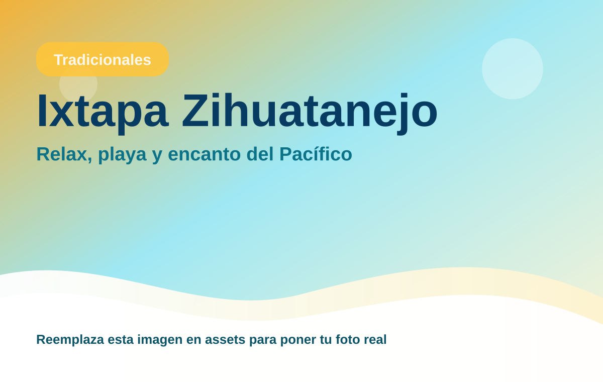
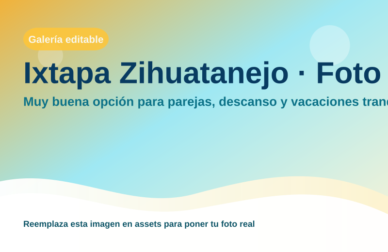

Ixtapa Zihuatanejo
Muy buena opción para parejas, descanso y vacaciones tranquilas.

Pacífico relajado con buena hotelería
Región: Tradicionales
Ideal para: Relax, playa y encanto del Pacífico
Usa esta ficha como base rápida. Puedes imprimirla en PDF desde el navegador o compartir el enlace.
